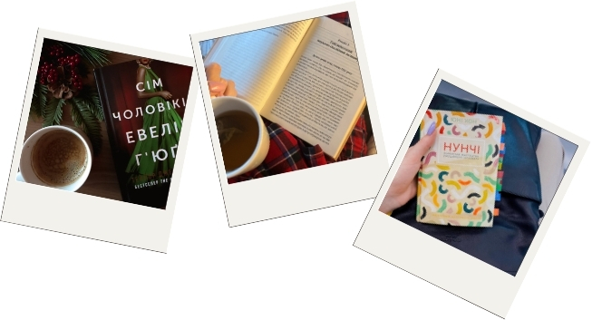
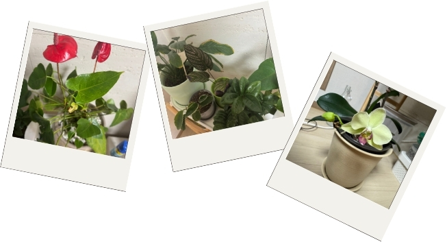
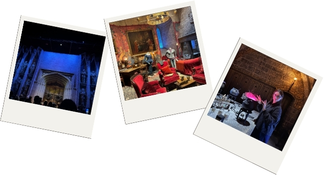

저는 무엇에 대해 이야기해야 될지 모를 때 좋아하는 것에 대해 이야기 해요~~~
저는 독서를 너무 좋아하고, 책을 수집하는 것도 좋아해요. 보통 저는 우크라이나어나 영어로 책을 읽어요. 저에게는 이 언어로 읽는 것이 좀 더 편해요. 한국어 책도 몇 권 가지고 있지만, 아주 천천히 읽어요. 저는 개인 도서관을 만드는 것이 꿈입니다.
저는 식물을 정말 좋아해요. 특히 선물로 받을 때 더 좋아요. 집에는 약 6개의 화분이 있고, 각각 이름이 있어요: Blossom, Timothy, Elana, Severus, Eva, Grace. 저에게는 아이들처럼요.
거의 매년 저는 해리 포터 영화를 처음부터 마지막까지 다시 봐요. 네, 질리지 않아요! 또한 작년 연말에는 워너 브라더스 해리 포터 스튜디오에 다녀왔어요. 정말 즐거운 시간이었어요!
